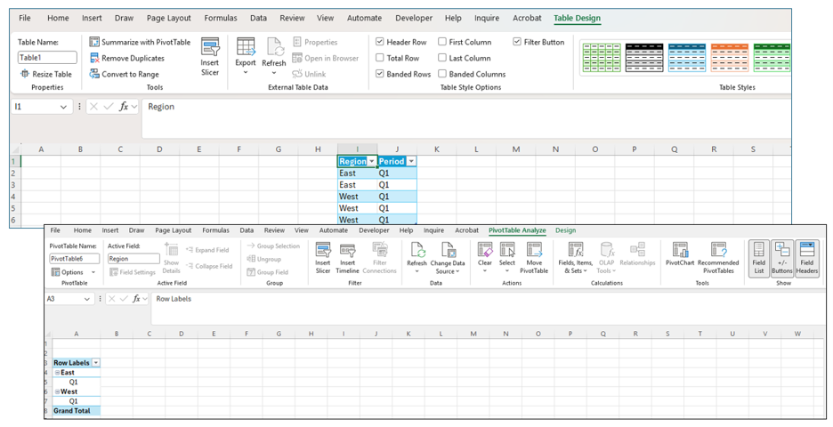
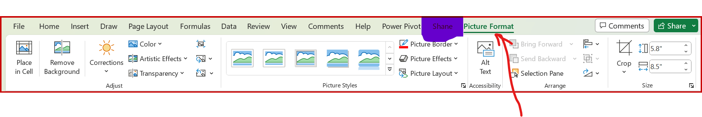
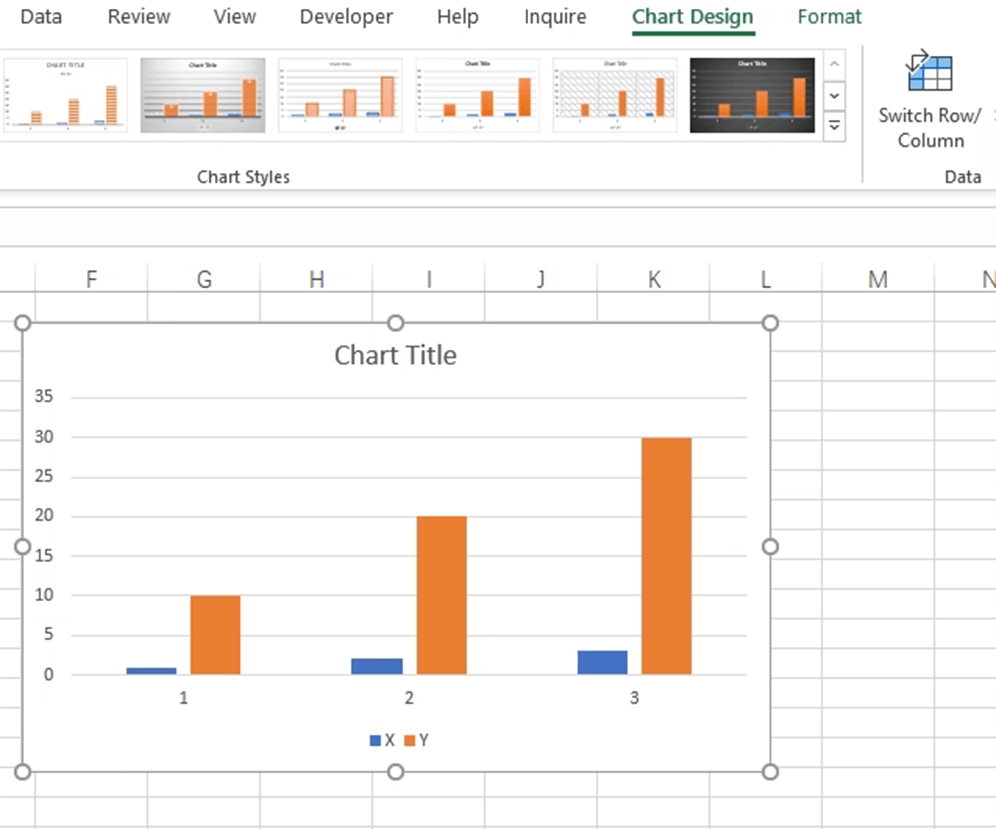
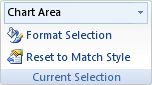
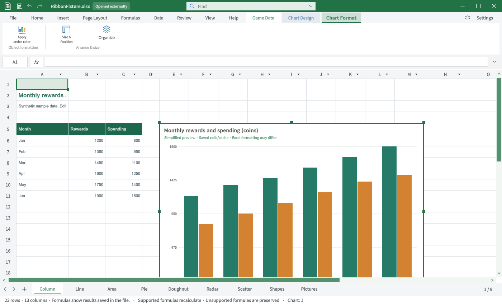
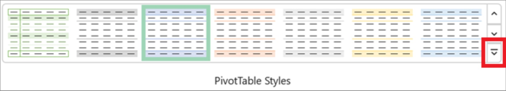

Tracefolio REPORTS & ISSUES
Tracefolio REPORTS & ISSUESExcel ↔ TurnRoom 탭별 TC · 특수탭 1
부분 완료TC-RIB-14–TC-RIB-20: 원본과 실제 Unity 캡처, 절차·기대·실제·재QA를 구분합니다.
작업 결과
7개 탭의 비교 TC입니다. 전체 Excel 동등성 통과 보고가 아닙니다.
변경 내용
적용 내용
TC-RIB-14 · 표 디자인 — 불일치
| 항목 | 내용 |
|---|---|
| 실행 절차 | ChartGallery A5:C11 안 C11을 선택합니다. |
| 기대 동작 | 표 내부에서 전용 탭·스타일 갤러리·옵션을 제공합니다. |
| 실제 결과 | 실제 표 등록 후 탭 표시.6개 프리셋과 옵션이 보이며 주황 타일 클릭으로 스타일 메타데이터 변경 확인. 원본의 표 크기·합계행·필터 등 전체 그룹은 없습니다. |
| 재QA·수정 필요 | 직접 셀 채우기가 있는 샘플은 표 프리셋보다 직접 서식이 보입니다. 스타일 시각 결과와 전체 옵션 회귀 필요. |
TC-RIB-15 · 도형 서식 — 불일치
| 항목 | 내용 |
|---|---|
| 실행 절차 | 도형 개체를 선택합니다. |
| 기대 동작 | 도형 삽입·도형 스타일·WordArt·접근성·정렬·크기를 대조합니다. |
| 실제 결과 | 187종 모양 목록과 채우기/선/텍스트/배치는 보입니다. 원본의 Shape Styles·WordArt 갤러리는 없습니다. |
| 재QA·수정 필요 | 도형 스타일 갤러리·그룹 기능 보완. 일반 도형 원본으로 대조 기준 교체. |
TC-RIB-16 · 그림 서식 — 불일치
| 항목 | 내용 |
|---|---|
| 실행 절차 | 삽입된 그림을 선택합니다. |
| 기대 동작 | 보정·그림 스타일·접근성·정렬·크기를 비교합니다. |
| 실제 결과 | 현재 자르기·크기·개체 관리3개만 보이며 그림 스타일 갤러리가 없습니다. |
| 재QA·수정 필요 | 보정·스타일·효과 등 미구현 항목. |
TC-RIB-17 · 차트 디자인 — 불일치
| 항목 | 내용 |
|---|---|
| 실행 절차 | 차트를 선택한 뒤 디자인 탭에서 스타일2를 클릭합니다. |
| 기대 동작 | 썸네일 스타일 목록·데이터·차트 요소를 대조합니다. |
| 실제 결과 | 스타일1–48 번호 목록을 추가했고 스타일2 타일 실제 IMGUI 클릭 확인. 원본의 효과 썸네일 갤러리와 데이터 명령은 없습니다. |
| 재QA·수정 필요 | 효과 썸네일 및 실제 렌더 적용 미구현. 번호 선택을 갤러리 동등성 통과로 처리하지 않음. |
TC-RIB-18 · 차트 서식 — 불일치
| 항목 | 내용 |
|---|---|
| 실행 절차 | 차트를 선택한 뒤 서식 탭을 선택합니다. |
| 기대 동작 | 현재 선택·서식·스타일·정렬을 비교합니다. |
| 실제 결과 | 현재 계열 색상·크기·개체 관리만 보입니다. 원본은 Current Selection 그룹 부분 자료입니다. |
| 재QA·수정 필요 | 전체 서식 원본과 요소별 실제 편집 회귀. |
TC-RIB-19 · 피벗 테이블 분석 — 기능 미구현
| 항목 | 내용 |
|---|---|
| 실행 절차 | 피벗 삽입·선택 경로를 확인합니다. |
| 기대 동작 | 피벗 개체 선택 시 분석 탭 |
| 실제 결과 | 현재 피벗 생성·편집 진입점과 해당 전용 탭이 없습니다. |
| 재QA·수정 필요 | 기능 미구현. 원본 없는 세부 탭은 사진 비교 미실행. |
TC-RIB-20 · 피벗 테이블 디자인 — 기능 미구현
| 항목 | 내용 |
|---|---|
| 실행 절차 | 피벗 삽입·선택 경로를 확인합니다. |
| 기대 동작 | 피벗 스타일·레이아웃 |
| 실제 결과 | 현재 피벗 생성·편집 진입점과 해당 전용 탭이 없습니다. |
| 재QA·수정 필요 | 기능 미구현. 원본 없는 세부 탭은 사진 비교 미실행. |
검증
Unity6000.0.83f1 / Windows / 영어 / 실제 Editor GUIView Direct3D11 캡처입니다. 별도 QA 프로젝트에서 실행했으며 모형·AI 이미지는 사용하지 않았습니다. Excel은 출처의 게시 원본이며 이 PC에서 직접 촬영한 화면이 아닙니다.
TC-RIB-14 · 사진 대조
| Excel 원본 | TurnRoom 현재 |
|---|---|
 |
 |
원본 범위: Windows 표 디자인 및 피벗 분석 원본. 원본 출처
TC-RIB-15 · 사진 대조
| Excel 원본 | TurnRoom 현재 |
|---|---|
 |
 |
원본 범위: OfficeToolTips 직접 촬영 Excel365 원본·빌드 미확인. 원본 출처
TC-RIB-16 · 사진 대조
| Excel 원본 | TurnRoom 현재 |
|---|---|
 |
 |
원본 범위: 부분 원본·정확한 빌드 미확인. 원본 출처
TC-RIB-17 · 사진 대조
| Excel 원본 | TurnRoom 현재 |
|---|---|
 |
 |
원본 범위: 부분 원본·정확한 빌드 미확인. 원본 출처
TC-RIB-18 · 사진 대조
| Excel 원본 | TurnRoom 현재 |
|---|---|
 |
 |
원본 범위: 구형 Current Selection 부분 원본. 원본 출처
TC-RIB-19 · 사진 대조
| Excel 원본 | TurnRoom 현재 |
|---|---|
 |
원본 범위: 원본 일부. 원본 출처
TC-RIB-20 · 사진 대조
| Excel 원본 | TurnRoom 현재 |
|---|---|
 |
|
원본 범위: 원본 일부. 원본 출처
남은 사항
명령 전체를 클릭·저장·재열기한 전수 동작 QA는 아닙니다. 화면 표시와 기능 실행 판정을 분리했습니다. 없는 기능은 미구현으로 기록했고 차단으로 바꾸지 않았습니다.
로컬 Excel 실행경로를 확보하지 못해 동일 빌드의 원본 직접 촬영은 미실행입니다. 일부 참조는 구형 Windows 또는 Excel 웹의 부분 화면입니다. 제품 저장소 커밋·푸시는 미실행입니다.
교훈: 원본의 실제 제품·탭을 확인하고 부분 자료를 전체 대조로 계산하지 않습니다. 기존 전역 지침 범위이므로 전역 변경 없음.
작업 시간
- 제안 시간: 최초15–25분. 전체 탭 비교 요청 추가 후35–50분 예상.
- 실제로 완료된 시간: 2026-10-31 22:49:21 KST 시작. 최신 캡처23:14:04 KST 완료, 이 문서 작성23:23 KST. 기능 전체 완료 시각이 아닙니다.
- XERJ: 사용 — XERJ ContextualTabs 검색 후 현재 소스·원본 ZIP·Unity 실행과 대조